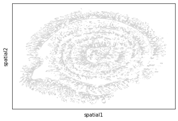
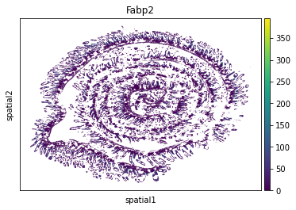

import anndata as ad
import scanpy as sc
import squidpy as sq
import tifffile
import pandas as pd
import swifter
import polars as pl
import swifter
import numpy as np
from matplotlib import pyplot as plt
import geopandas as gpd
import geojson
import os
from scipy.spatial import ConvexHull
from shapely.geometry import shape
from shapely.geometry import MultiPoint
from shapely.ops import transform
import alphashape
from tqdm import tqdmCreate Anndata
Put everything together in an Anndata object that can be used with pyhton or R for further analysis
# Set the version of baysor that we want to use
v = 30
path = f"baysor_{str(v)}_mol_per_cell/"We start by importing the counts. As you can see, the genes are in rows and the cells in the columns. We need to transpose the table (switch rows and columns) to be compatible with anndata
counts = pd.read_csv(path + "segmentation_counts.tsv",sep='\t', index_col='gene')
counts| 1 | 2 | 3 | 4 | 5 | 6 | 7 | 8 | 9 | 10 | ... | 120685 | 120686 | 120687 | 120688 | 120689 | 120690 | 120691 | 120692 | 120693 | 120694 | |
|---|---|---|---|---|---|---|---|---|---|---|---|---|---|---|---|---|---|---|---|---|---|
| gene | |||||||||||||||||||||
| Abca2 | 0 | 0 | 0 | 0 | 0 | 0 | 0 | 0 | 0 | 0 | ... | 0 | 0 | 0 | 0 | 0 | 0 | 0 | 0 | 0 | 0 |
| Abcg1 | 0 | 0 | 1 | 2 | 0 | 0 | 0 | 0 | 0 | 0 | ... | 0 | 0 | 0 | 0 | 0 | 0 | 0 | 0 | 0 | 0 |
| Acly | 1 | 0 | 0 | 0 | 0 | 0 | 0 | 0 | 0 | 0 | ... | 0 | 0 | 0 | 0 | 0 | 0 | 0 | 0 | 0 | 0 |
| Acta2 | 0 | 1 | 0 | 0 | 0 | 0 | 0 | 0 | 0 | 0 | ... | 0 | 0 | 0 | 0 | 0 | 0 | 0 | 0 | 0 | 0 |
| Adam12 | 0 | 0 | 0 | 0 | 0 | 0 | 0 | 0 | 0 | 0 | ... | 0 | 0 | 0 | 0 | 0 | 0 | 0 | 0 | 0 | 0 |
| ... | ... | ... | ... | ... | ... | ... | ... | ... | ... | ... | ... | ... | ... | ... | ... | ... | ... | ... | ... | ... | ... |
| Zfas1 | 0 | 0 | 0 | 0 | 0 | 0 | 0 | 0 | 0 | 0 | ... | 0 | 0 | 0 | 0 | 0 | 0 | 0 | 0 | 0 | 0 |
| Zfp683 | 0 | 0 | 0 | 0 | 0 | 0 | 0 | 0 | 0 | 0 | ... | 0 | 0 | 0 | 0 | 0 | 0 | 0 | 0 | 0 | 0 |
| Znrf2 | 1 | 1 | 0 | 0 | 0 | 1 | 0 | 0 | 0 | 0 | ... | 0 | 0 | 0 | 0 | 0 | 0 | 0 | 0 | 0 | 0 |
| Zp3 | 0 | 0 | 0 | 0 | 0 | 0 | 0 | 0 | 0 | 0 | ... | 0 | 0 | 0 | 0 | 0 | 0 | 0 | 0 | 0 | 0 |
| mt-Nd4l | 0 | 1 | 0 | 0 | 0 | 2 | 0 | 0 | 0 | 0 | ... | 0 | 0 | 0 | 0 | 0 | 0 | 0 | 0 | 0 | 0 |
499 rows × 120694 columns
Next, we import some more information about the cells. This includes the spatial coordinates and the size of the cell. Especially the spatial coordinates are important for some plotting functions.
cells = pd.read_csv(path + "segmentation_cell_stats.csv", index_col="cell")
cells| x | y | cluster | n_transcripts | density | elongation | area | avg_confidence | |
|---|---|---|---|---|---|---|---|---|
| cell | ||||||||
| 1 | 130.347934 | 1410.084088 | 5 | 507 | 3.197 | 1.744 | 158.600 | 1.0000 |
| 2 | 123.784174 | 1416.490865 | 2 | 416 | 4.164 | 1.319 | 99.900 | 0.9999 |
| 3 | 138.937365 | 1407.709821 | 5 | 393 | 2.659 | 1.545 | 147.800 | 0.9996 |
| 4 | 145.826591 | 1406.267540 | 2 | 172 | 2.533 | 1.929 | 67.900 | 1.0000 |
| 5 | 142.976419 | 1409.124042 | 2 | 16 | 2.022 | 4.211 | 7.914 | 1.0000 |
| ... | ... | ... | ... | ... | ... | ... | ... | ... |
| 120690 | 2691.674300 | 669.079100 | 6 | 1 | NaN | NaN | NaN | 1.0000 |
| 120691 | 5225.633000 | 5751.088000 | 6 | 1 | NaN | NaN | NaN | 0.9999 |
| 120692 | 1583.965900 | 2634.434350 | 6 | 2 | NaN | NaN | NaN | 0.9998 |
| 120693 | 3159.905300 | 5049.000000 | 6 | 1 | NaN | NaN | NaN | 0.9775 |
| 120694 | 1896.185200 | 1018.834170 | 7 | 1 | NaN | NaN | NaN | 0.9999 |
120694 rows × 8 columns
We also want to add the cell boundaries. We can import the GeoPandas Dataframe from step 6 again and add that to the cells table
# Unfortunately the Polygons form Baysor are no good
# See: https://github.com/kharchenkolab/Baysor/issues/15
# gdf = gpd.read_file(path + "segmentation_polygons_joint.shp")
# gdfSo instead we will create new polygons from the transcripts. Let’s import the transcripts
transcripts = pd.read_csv(path + "segmentation.csv")
transcripts| Column1 | x | y | z | gene | mask | molecule_id | prior_segmentation | confidence | cluster | cell | assignment_confidence | is_noise | ncv_color | |
|---|---|---|---|---|---|---|---|---|---|---|---|---|---|---|
| 0 | 0 | 3822.614000 | 134.603240 | 4.0 | Pycr1 | 0 | 1 | 0 | 0.00000 | 8 | 0 | 1.00 | True | #00B2FF |
| 1 | 1 | 3865.508500 | 89.455734 | 5.0 | Slc7a11 | 0 | 2 | 0 | 0.00000 | 4 | 0 | 1.00 | True | #00B2FF |
| 2 | 2 | 3972.906500 | 163.452200 | 6.0 | Cxcr3 | 0 | 3 | 0 | 0.00000 | 8 | 0 | 1.00 | True | #00B3FF |
| 3 | 3 | 3968.895800 | 33.911680 | 0.0 | Ldhb | 0 | 4 | 0 | 0.00000 | 2 | 0 | 1.00 | True | #00B2FF |
| 4 | 5 | 3664.242700 | 184.795300 | 4.0 | Slc2a2 | 0 | 5 | 0 | 0.00000 | 5 | 0 | 1.00 | True | #9B8844 |
| ... | ... | ... | ... | ... | ... | ... | ... | ... | ... | ... | ... | ... | ... | ... |
| 17720900 | 17812303 | 3266.297176 | 6421.473477 | 6.0 | B2m | 0 | 17720901 | 0 | 1.00000 | 5 | 68623 | 1.00 | False | #9C4D00 |
| 17720901 | 17812304 | 3499.033270 | 6353.866514 | 6.0 | B2m | 136929 | 17720902 | 136929 | 1.00000 | 5 | 69774 | 0.66 | False | #A90000 |
| 17720902 | 17812305 | 3502.489212 | 6355.486490 | 6.0 | B2m | 54100 | 17720903 | 54100 | 1.00000 | 5 | 69873 | 1.00 | False | #C90000 |
| 17720903 | 17812306 | 3848.083411 | 6330.754869 | 6.0 | B2m | 0 | 17720904 | 0 | 1.00000 | 5 | 111888 | 0.28 | False | #974600 |
| 17720904 | 17812307 | 3905.538447 | 6375.466183 | 6.0 | B2m | 98745 | 17720905 | 98745 | 0.99785 | 7 | 72862 | 0.66 | False | #E000F8 |
17720905 rows × 14 columns
Previously I have done that by creating a convex hull. However, an alphashape might acutally be nicer. So let’s try that
# # this solution here is not ideal, as the polygons can overlap
# # but it is the best I can think of currently
# def make_polygons(transcripts):
# points = transcripts[transcripts.cell != 0][['cell','x','y']]
# points['poly'] = gpd.points_from_xy(points.x, points.y)
# poly = points.groupby('cell')['poly'].agg(lambda x: MultiPoint(x.to_list()).convex_hull)
# poly = gpd.GeoDataFrame(poly)
# return(poly)
# poly = make_polygons(transcripts)
# poly# this is from bento
def _make_alphashape(points_df,x_col = 'x', y_col = 'y',alpha=0.05,buffer=0):
"""Generate cell boundaries from points if they are already assigned to cell numbers.
Parameters
----------
points_df : GeoDataFrame
Point coordinates.
x_col : string
Column header for 'X' coordinate.
y_col : string
Column header for 'Y' coordinate.
alpha : float
Alpha parameter for generating an alpha shape around the group of points.
buffer: int
Additional padding around the points if needed. 0 by default
Returns
-------
cell_seg: Polygon
Return a shapely Polygon object as a cell segmentation mask.
"""
points = np.array([points_df[x_col],points_df[y_col]]).T
# create unique points
points = np.unique(points, axis=0)
cell_seg = alphashape.alphashape(points, alpha).buffer(buffer)
return cell_segpoints = transcripts[transcripts.cell != 0][['cell','x','y', 'gene']]
points = points.set_index('cell')
points| x | y | gene | |
|---|---|---|---|
| cell | |||
| 12569 | 3519.302200 | 155.489910 | Klf6 |
| 12646 | 3512.186300 | 166.390230 | Klf6 |
| 12765 | 3536.425300 | 170.964000 | Klf6 |
| 12765 | 3524.853300 | 171.396010 | Klf6 |
| 12834 | 3517.636500 | 171.748400 | Klf6 |
| ... | ... | ... | ... |
| 68623 | 3266.297176 | 6421.473477 | B2m |
| 69774 | 3499.033270 | 6353.866514 | B2m |
| 69873 | 3502.489212 | 6355.486490 | B2m |
| 111888 | 3848.083411 | 6330.754869 | B2m |
| 72862 | 3905.538447 | 6375.466183 | B2m |
16108473 rows × 3 columns
tqdm.pandas()%time poly = points.groupby('cell').progress_apply(_make_alphashape, alpha=.05)100%|█████████████████████████████████████████████████████████████████████████| 120694/120694 [44:49<00:00, 44.88it/s]CPU times: user 44min 42s, sys: 7.81 s, total: 44min 50s
Wall time: 44min 49s# fig = plt.figure(figsize=(8,5))
# ax = fig.subplots()
# ax.scatter(points.x, points.y)
# gpd.GeoSeries(poly).boundary.plot(ax = ax)poly = gpd.GeoDataFrame({'cell_shape': poly})
poly| cell_shape | |
|---|---|
| cell | |
| 1 | POLYGON ((121.90738 1410.9453, 125.958466 1414... |
| 2 | POLYGON ((119.71684 1412.4857, 118.00169 1416.... |
| 3 | POLYGON ((145.00394 1410.3529, 145.53467 1406.... |
| 4 | POLYGON ((143.04446 1401.9124, 142.22736 1402.... |
| 5 | POLYGON ((141.25397 1406.9685, 140.95296 1407.... |
| ... | ... |
| 120690 | POLYGON EMPTY |
| 120691 | POLYGON EMPTY |
| 120692 | POLYGON EMPTY |
| 120693 | POLYGON EMPTY |
| 120694 | POLYGON EMPTY |
120694 rows × 1 columns
cells.shape(120694, 8)# merge cells and poly
obs = cells.join(poly)
obs| x | y | cluster | n_transcripts | density | elongation | area | avg_confidence | cell_shape | |
|---|---|---|---|---|---|---|---|---|---|
| cell | |||||||||
| 1 | 130.347934 | 1410.084088 | 5 | 507 | 3.197 | 1.744 | 158.600 | 1.0000 | POLYGON ((121.90738 1410.9453, 125.958466 1414... |
| 2 | 123.784174 | 1416.490865 | 2 | 416 | 4.164 | 1.319 | 99.900 | 0.9999 | POLYGON ((119.71684 1412.4857, 118.00169 1416.... |
| 3 | 138.937365 | 1407.709821 | 5 | 393 | 2.659 | 1.545 | 147.800 | 0.9996 | POLYGON ((145.00394 1410.3529, 145.53467 1406.... |
| 4 | 145.826591 | 1406.267540 | 2 | 172 | 2.533 | 1.929 | 67.900 | 1.0000 | POLYGON ((143.04446 1401.9124, 142.22736 1402.... |
| 5 | 142.976419 | 1409.124042 | 2 | 16 | 2.022 | 4.211 | 7.914 | 1.0000 | POLYGON ((141.25397 1406.9685, 140.95296 1407.... |
| ... | ... | ... | ... | ... | ... | ... | ... | ... | ... |
| 120690 | 2691.674300 | 669.079100 | 6 | 1 | NaN | NaN | NaN | 1.0000 | POLYGON EMPTY |
| 120691 | 5225.633000 | 5751.088000 | 6 | 1 | NaN | NaN | NaN | 0.9999 | POLYGON EMPTY |
| 120692 | 1583.965900 | 2634.434350 | 6 | 2 | NaN | NaN | NaN | 0.9998 | POLYGON EMPTY |
| 120693 | 3159.905300 | 5049.000000 | 6 | 1 | NaN | NaN | NaN | 0.9775 | POLYGON EMPTY |
| 120694 | 1896.185200 | 1018.834170 | 7 | 1 | NaN | NaN | NaN | 0.9999 | POLYGON EMPTY |
120694 rows × 9 columns
We also want to add the transcripts to uns in anndata. We need to keep the columns gene, cell, x and y
uns = {
'points': transcripts[['gene', 'cell', 'x', 'y']]
}
uns{'points': gene cell x y
0 Pycr1 0 3822.614000 134.603240
1 Slc7a11 0 3865.508500 89.455734
2 Cxcr3 0 3972.906500 163.452200
3 Ldhb 0 3968.895800 33.911680
4 Slc2a2 0 3664.242700 184.795300
... ... ... ... ...
17720900 B2m 68623 3266.297176 6421.473477
17720901 B2m 69774 3499.033270 6353.866514
17720902 B2m 69873 3502.489212 6355.486490
17720903 B2m 111888 3848.083411 6330.754869
17720904 B2m 72862 3905.538447 6375.466183
[17720905 rows x 4 columns]}uns['points']| gene | cell | x | y | |
|---|---|---|---|---|
| 0 | Pycr1 | 0 | 3822.614000 | 134.603240 |
| 1 | Slc7a11 | 0 | 3865.508500 | 89.455734 |
| 2 | Cxcr3 | 0 | 3972.906500 | 163.452200 |
| 3 | Ldhb | 0 | 3968.895800 | 33.911680 |
| 4 | Slc2a2 | 0 | 3664.242700 | 184.795300 |
| ... | ... | ... | ... | ... |
| 17720900 | B2m | 68623 | 3266.297176 | 6421.473477 |
| 17720901 | B2m | 69774 | 3499.033270 | 6353.866514 |
| 17720902 | B2m | 69873 | 3502.489212 | 6355.486490 |
| 17720903 | B2m | 111888 | 3848.083411 | 6330.754869 |
| 17720904 | B2m | 72862 | 3905.538447 | 6375.466183 |
17720905 rows × 4 columns
var = pd.DataFrame({
'Symbol': counts.index
})
var = var.set_index('Symbol')
var| Symbol |
|---|
| Abca2 |
| Abcg1 |
| Acly |
| Acta2 |
| Adam12 |
| ... |
| Zfas1 |
| Zfp683 |
| Znrf2 |
| Zp3 |
| mt-Nd4l |
499 rows × 0 columns
Let’s create a first anndata obeject.
adata = ad.AnnData(
X = counts.transpose().to_numpy(dtype = np.float32),
obs = obs,
obsm={"spatial": cells[['x', 'y']].to_numpy()},
uns = uns,
var = var
)
adata/projects/ps-yeolab5/t_cell_p01/home/mheeg/mambaforge/envs/cellpose/lib/python3.8/site-packages/anndata/_core/anndata.py:121: ImplicitModificationWarning: Transforming to str index.
warnings.warn("Transforming to str index.", ImplicitModificationWarning)AnnData object with n_obs × n_vars = 120694 × 499
obs: 'x', 'y', 'cluster', 'n_transcripts', 'density', 'elongation', 'area', 'avg_confidence', 'cell_shape'
uns: 'points'
obsm: 'spatial'sc.pl.embedding(adata, basis="spatial")
sc.pl.embedding(adata, color="Fabp2", basis="spatial")
# Convert geometry from GeoSeries to list for h5ad serialization compatibility
adata = adata.copy()
adata.obs = adata.obs.apply(
lambda col: col.apply(lambda val: val.wkt if val is not None else val).astype(
str
)
if col.astype(str).str.startswith("POLYGON").any()
else col
)adata.write(filename=path+"anndata.h5ad")adata.obs['cell_shape']cell
1 POLYGON ((121.90738 1410.9453, 125.958466 1414...
2 POLYGON ((119.71684 1412.4857, 118.00169 1416....
3 POLYGON ((145.00394 1410.3529, 145.53467 1406....
4 POLYGON ((143.04446 1401.9124, 142.22736 1402....
5 POLYGON ((141.25397 1406.9685, 140.95296 1407....
...
120690 POLYGON EMPTY
120691 POLYGON EMPTY
120692 POLYGON EMPTY
120693 POLYGON EMPTY
120694 POLYGON EMPTY
Name: cell_shape, Length: 120694, dtype: category
Categories (117869, object): ['MULTIPOLYGON (((2277.3108 1000.97864, 2278.28..., 'POLYGON ((20.75769 1634.7267, 23.293108 1638...., 'POLYGON ((24.627798 1641.6558, 24.294823 1642..., 'POLYGON ((25.686134 1636.1595, 24.690582 1636..., ..., 'POLYGON ((6063.0376 4178.1567, 6062.3857 4175..., 'POLYGON ((6068.567 4227.3267, 6068.722 4225.2..., 'POLYGON ((6117.9385 4994.9014, 6118.751 4995...., 'POLYGON EMPTY']Create plots with the new alphashape cell boundaries
def create_rescaling_function():
"""
Here we create a rescaling function that takes three argument: x, y, z.
These are the coordinates of out point. We will apply the transformation
defined in 'micron_to_mosaic_pixel_transform' to convert the micron to pixel
and then rescale it with the same scaling factor used in script '01'
"""
# the get the size of the original image, we can take any of the images
# they are all the same size
size_original_image = tifffile.imread("../Merlin_output/images/mosaic_Cellbound2_z0.tif").shape
# rescaled image
size_rescaled_image = tifffile.imread("image/full_stack.tif").shape
# since this is the stacked image, we dont need to keep all dimensions.
size_rescaled_image = size_rescaled_image[2:4]
scale_y = size_original_image[0] / size_rescaled_image[0]
scale_x = size_original_image[1] / size_rescaled_image[1]
rescale = np.array([scale_x, scale_y, 1])
mmpt = pd.read_csv(
"../Merlin_output/images/micron_to_mosaic_pixel_transform.csv",
header=None,
sep=' '
)
mmpt = np.array(mmpt)
def rescale_fun(x,y,z):
points = np.array([x,y,z])
# coordinates to pixel
points = np.diag(mmpt) * points.T + np.append(mmpt[0:2,2], 0)
# apply our scaling
points = points / rescale
return(points.T)
return(rescale_fun)rescale_fun = create_rescaling_function()
rescale_funShaped series: series shape does not match page shape(3.0865665011414225, 3.0865709219772635)img = tifffile.imread("cellpose_segmentation/full_stack.tif")[3]def make_image(img):
""" Function to format the np array for plotting
Takes a np array of dimensions (2 x Y x X) and
formats it to Y x X x 3.
Third color is filled with zeros.
"""
# move the RGB to the third dimension
img = np.transpose(img, [1,2,0])
zeros = np.zeros(
[img.shape[0], img.shape[1], 1],
dtype = np.uint8
)
# fill R(ed) with zeros
img = np.concatenate(
[zeros,img],
axis = 2
)
# scale the colors from 0 to 255 to make it more intense
img[:,:,1] = np.uint8(img[:,:,1] / np.max(img[:,:,1]) * 255)
img[:,:,2] = np.uint8(img[:,:,2] / np.max(img[:,:,2]) * 255)
return(img)# remove empty polygons, these cause an error for plotting
poly_draw = gpd.GeoSeries(poly.cell_shape)
poly_draw = poly_draw[~poly_draw.is_empty]
poly_drawcell
1 POLYGON ((121.907 1410.945, 125.958 1414.014, ...
2 POLYGON ((119.717 1412.486, 118.002 1416.133, ...
3 POLYGON ((145.004 1410.353, 145.535 1406.199, ...
4 POLYGON ((143.044 1401.912, 142.227 1402.037, ...
5 POLYGON ((141.254 1406.968, 140.953 1407.200, ...
...
120655 POLYGON ((209.430 2536.272, 208.787 2535.732, ...
120667 POLYGON ((1675.971 3072.208, 1674.777 3072.812...
120670 POLYGON ((2604.101 3175.266, 2603.863 3175.968...
120681 POLYGON ((5311.925 4714.247, 5309.319 4715.523...
120687 POLYGON ((3972.193 4236.158, 3972.064 4236.481...
Name: cell_shape, Length: 117868, dtype: geometryIn order to plot the polygon, we need to transform the position to the image pixed for the polygons too. The polygons only have x and y (2d). But we can easlily create the 2d wrapper function around rescale_fun. This then can be applied to the Geopandas polygon (see the example below)
def rescale_fun_2d(x,y):
ones = np.ones(len(x))
res = rescale_fun(x,y,ones)
return(res[0],res[1])
fig = plt.figure(figsize = (250,250))
ax = fig.add_subplot(111)
print(">>> plotting image")
ax.imshow(
make_image(img),
interpolation = "nearest",
origin='lower'
)
print(">>> plotting transcripts")
ax.scatter(
rescale_fun(transcripts.x, transcripts.y, transcripts.z)[0],
rescale_fun(transcripts.x, transcripts.y, transcripts.z)[1],
s=0.05, c=transcripts.ncv_color)
print(">>> plotting cell boundaries")
poly_draw.geometry.apply(lambda x: transform(rescale_fun_2d, x)).boundary.plot(ax = ax, linewidth=0.5, edgecolor="red")
ax.axis('off')
fig.tight_layout()
print(">>> saving jpg")
fig.savefig(path+'/alphashape.jpg', dpi = 100)